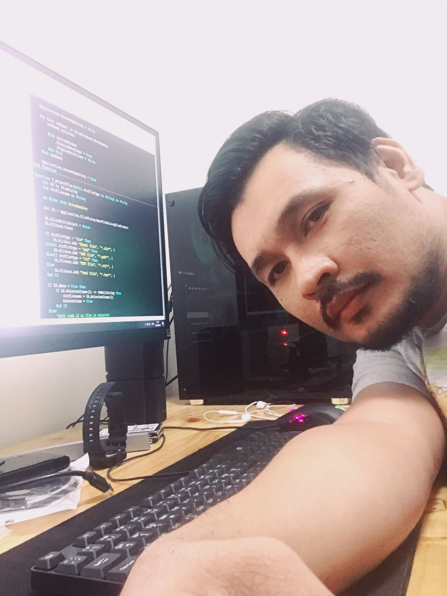

ยินดีต้อนรับสู่ Portfolio ของผม
ยกระดับประสิทธิภาพองค์กรด้วยเทคโนโลยี การออกแบบสถาปัตยกรรมระบบที่มั่นคง และการปรับปรุงกระบวนการทำงาน (Business Process Improvement) ด้วยประสบการณ์กว่า 12 ปี

ผมเป็นนักวิเคราะห์ระบบและนักพัฒนาซอฟต์แวร์ที่มีความเชี่ยวชาญในการออกแบบและวางสถาปัตยกรรมระบบองค์กร (Enterprise Architecture) โดยเน้นไปที่การทำงานร่วมกับผู้ใช้งานเพื่อเก็บ Requirement และนำมาวิเคราะห์เพื่อปรับปรุง Business Process
ตลอดระยะเวลาการทำงาน ผมได้รับความไว้วางใจให้ดูแลและพัฒนาระบบมาแล้วกว่า 200 โครงการ ครอบคลุมตั้งแต่งานฐานข้อมูลขนาดใหญ่ ไปจนถึงเว็บแอปพลิเคชันเชิงซ้อน
เคยมีประสบการณ์ปฏิบัติงานร่วมกับบริษัทระดับโลกอย่าง Exxon ทำให้เข้าใจมาตรฐานการทำงานและการรักษาความปลอดภัยของข้อมูลในองค์กรขนาดใหญ่เป็นอย่างดี
เชี่ยวชาญการออกแบบโครงสร้างฐานข้อมูล (Relational Database) เพื่อรองรับข้อมูลขนาดใหญ่และการประมวลผลที่รวดเร็ว
พัฒนาระบบ Backend และ Frontend ที่มีความเสถียร รองรับการใช้งานจริงด้วย Framework ทันสมัย
วิเคราะห์ Requirement ออกแบบ Flow งาน และพัฒนาระบบ Automation ด้วย VBA เพื่อลดภาระงานแมนนวล
คัดเลือกจากกว่า 200 โครงการที่เคยพัฒนา เพื่อแสดงให้เห็นถึงความสามารถในการวิเคราะห์และออกแบบระบบ
ระบบบริหารจัดการแบบครบวงจร (Enterprise System) ที่ดูแลตั้งแต่ฐานข้อมูล โลจิสติกส์ และการจัดการภายในองค์กร เป็นโปรเจกต์เรือธงที่แสดงให้เห็นถึงทักษะสถาปัตยกรรมข้อมูลชั้นสูง (SQL Server/MySQL) และการออกแบบเว็บแอปพลิเคชันที่ซับซ้อนด้วย PHP/Laravel
แพลตฟอร์มสำหรับการติดตามและคำนวณคาร์บอนฟุตพริ้นท์ (Carbon Footprint Tracker) ช่วยองค์กรในการวิเคราะห์ข้อมูลสิ่งแวดล้อม เน้นการประมวลผลข้อมูลเชิงสถิติและการทำ Report Dashboard
ระบบรวบรวมและปรับปรุงขั้นตอนการทำงาน (SOPs) สำหรับองค์กร นำ MS Access VBA มาใช้ในการลดกระบวนการ Manual เปลี่ยนเป็นระบบอัตโนมัติ ช่วยลดเวลาการทำงานได้มหาศาล